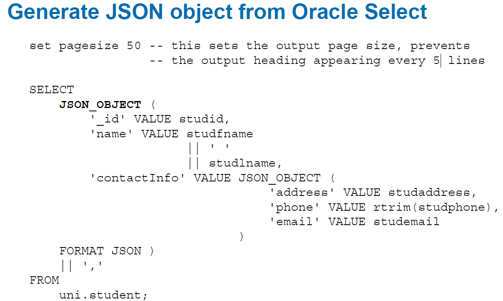
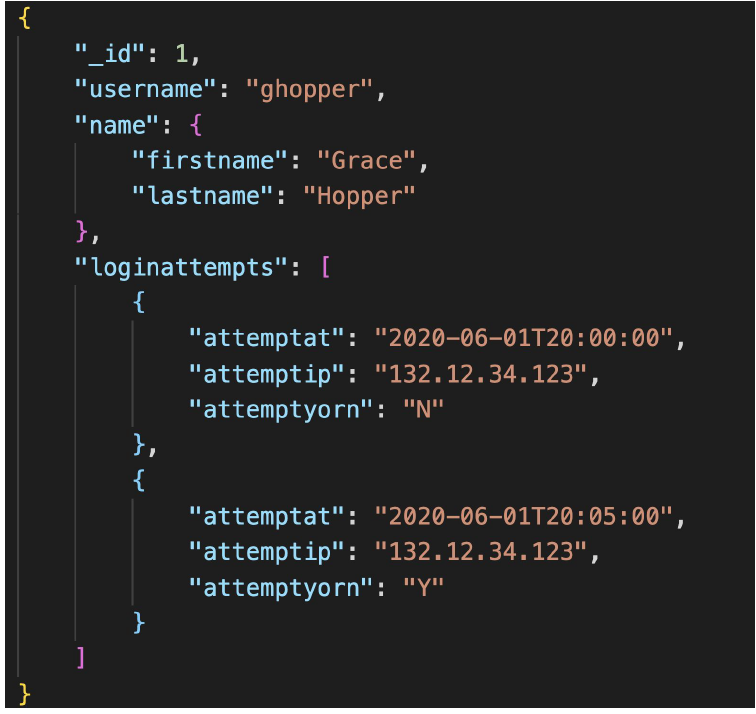
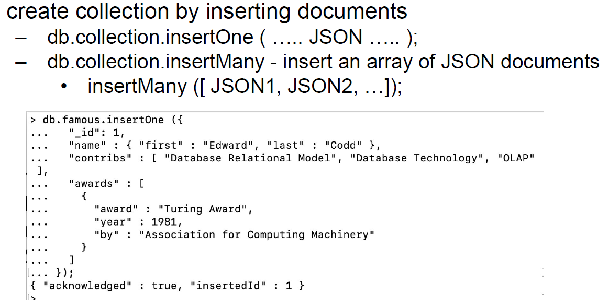
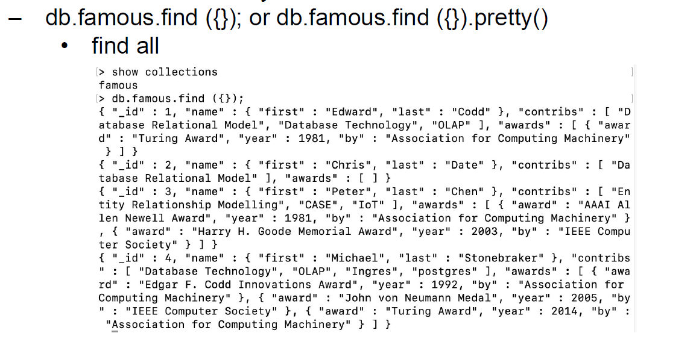
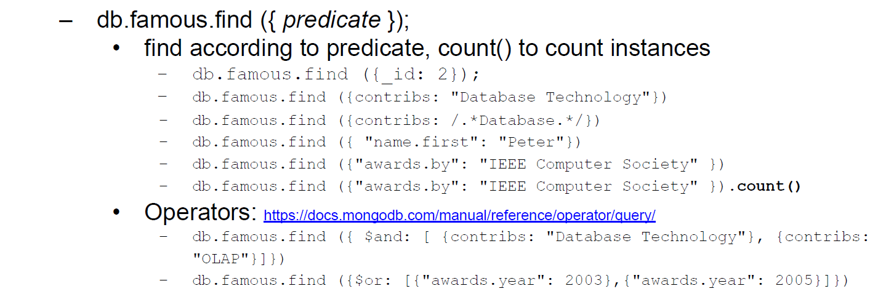
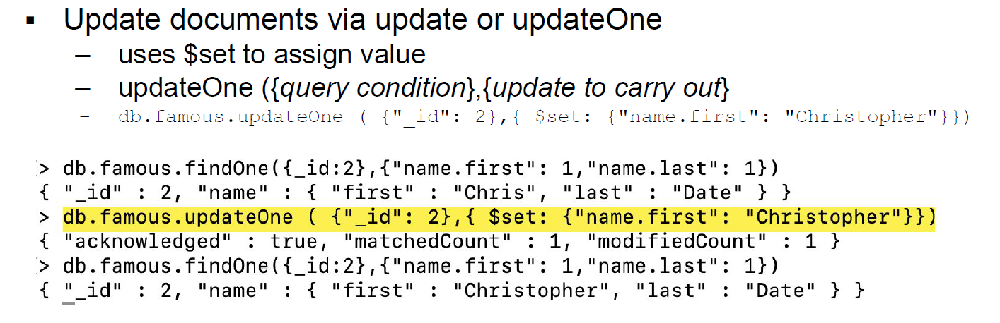
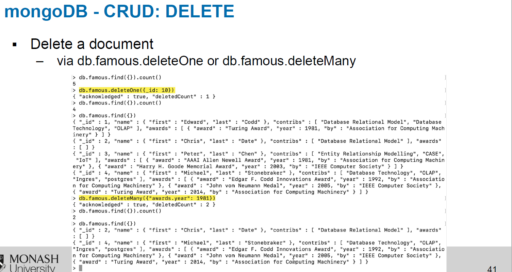

NoSQL
▪Characteristics of Big Data
▪Characteristics of Big Data
Volume: The quantity of data to be stored
Velocity: The speed at which data enters the system and must be processed
Variety: Variations in the structure of the data to be stored
▪Four major noSQL models
Characteristics
– Non relational,
– mostly open source,
– distributed (cluster friendly),
– schema-less (no fixed storage schema)
▪ Key-value store– Each item stored consists of a key and value pair (the value may be a numeric,
a document, an image etc)
▪ Document– Each item is stored as a document (normally BSON or JSON document, but could be XML)
▪ Column Family (also called Wide Column Store) – Key points to a set of multiple column values
containing related data arranged by column family
▪ Graph - based on a graph structure the graph model views data at a highly non aggregated level
– Based on graph theory
▪Role of Hadoop (basic only)
Hadoop is not a database
standard for most Big Data storage and processing
framework for distributing and processing very large data
components
Hadoop Distributed File System (HDFS): Based on several key assumptions-- High volume;
Write-once, read-many; Streaming access; Fault tolerance
MapReduce: –Framework used to process large data sets across clusters
还是不理解Hadoop是什么
▪Using SQL to generate JSON document


▪MongoDB CRUD commands
–C: insert (One and Many)

–R: find (predicates, count(), pretty())


–U: update (One and Many)

–D: delete (One and Many)
